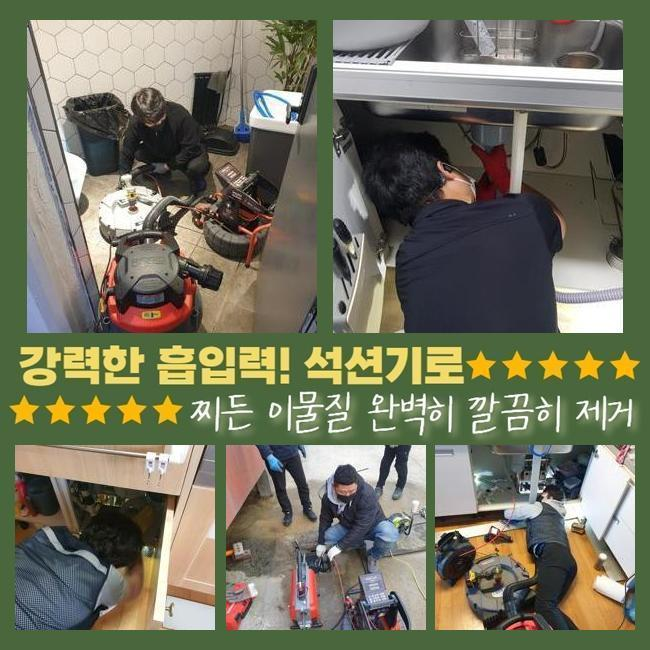
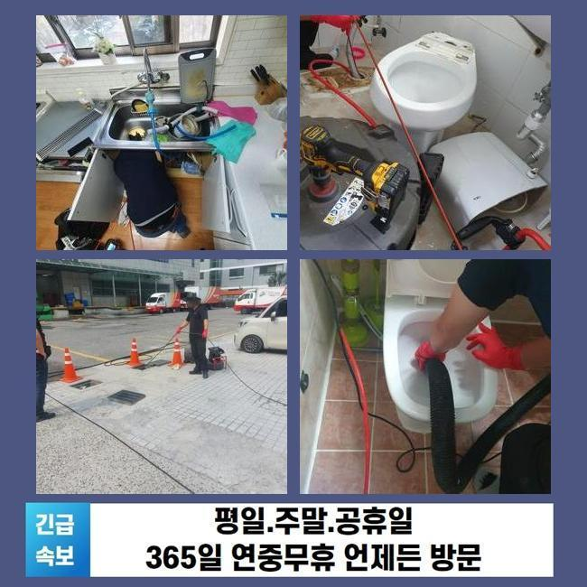
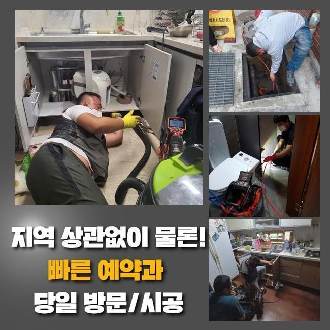
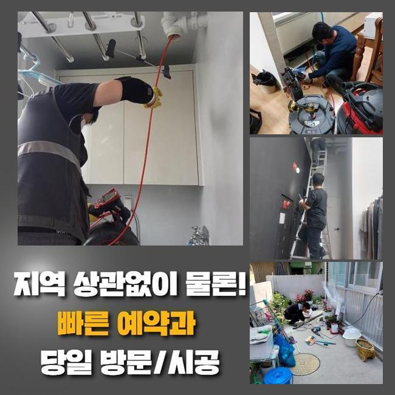
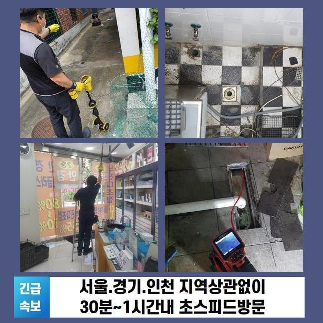
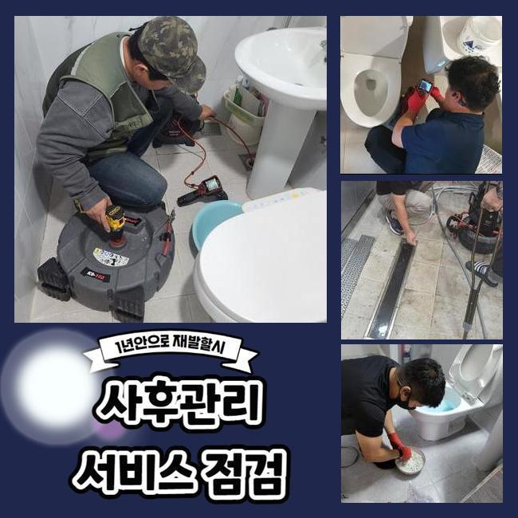
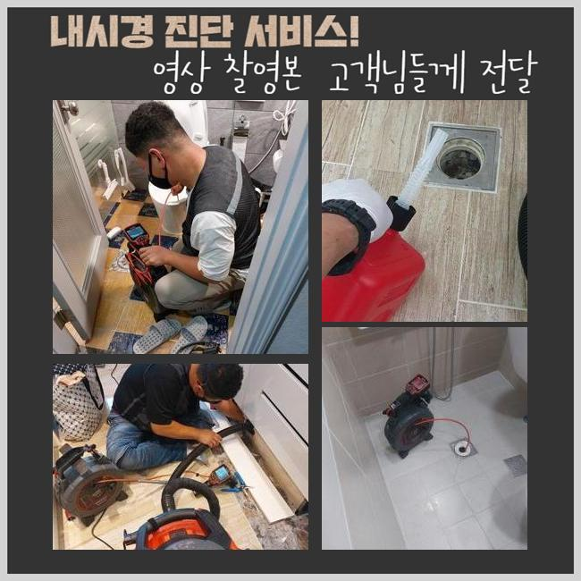

🏠 남촌동싱크대배수구역류 원동 배관내시경카메라 배관설비공사
용인 원동 싱크대막힘 전문 시공 후기

📋 작업 개요
- 위치: 용인 원동, 원동, 용인
- 서비스 유형: 싱크대막힘, 배관막힘, 집수정막힘, 역류해결, 배관청소, 설비공사
- 작업 일시: 2025. 1. 12. 15:25
- 업체명: 하수구수사대 (010-5615-2118)
🔍 문제 상황
남촌동싱크대배수구역류 원동 배관내시경카메라 배관설비공사
연립 주택의 배수라인을 관리하지 않고 사용하시면 침전물이 쌓이면서 하수라인의 역류문제가 발생할 확률이 높아요
사용하고 계시는 하수시설의 사용년수가 오래 되셨다면 정기적으로 하수시설의 문제를 확인하시는 것을 추천합니다
점심쯤이 지나서 의뢰인께서 하수라인이 막혀서 문제가 생겼다고 전화주셨어요
긴급하게 출동을 해서 살펴보니 마을과는 떨어져서 외딴 지역의 다세대주택으로 주변에 캠핑시설이 위치해있는 상태였어요
건물을 올린지 오래되지도 않았지만 건물 바깥쪽에서 역류사고가 자꾸 발생한다고 말씀 해주셨어요
확인해본 결과로는 창고안에 설치된 집수정에서 밖에 위치해있는 정화조쪽으로 유입되는 형태였습니다
정화조가 위치한 곳이 꽤 멀어서 창고에 설치하는게 가장 낫다고 하셨대요
사례자님께 문제부위를 발견해도 중간부분에 점검구가 없는 경우라면 예상시간이 길어질거라고 안내 해드렸고 동의를 해주셨습니다
집수정에서 내시경기를 넣었으나 오염물질이 가득하게 차있었기 때문에 안쪽으로 라인이 들어가질 않았어요

🔎 원인 분석
💡 전문가 진단: 정밀 진단 장비를 사용하여 슬러지의 고착 여부를 판명하고 타격/세척 작업을 실시했습니다.
침전물이 꽉 막혀있는 상황을 고객님께도 보여드리며 설명 해드렸어요
샤프트기계로 수리를 진행했습니다
기기에 머리카락과 물티슈가 계속적으로 걸려서 나왔습니다
일반적인 역류를 발생시키는 막힘요소는 머리카락과 물티슈가 흔합니다
의뢰인님께 이러한 이물질은 따로 폐기하시라고 말씀 드렸어요
물티슈같은 것은 화학적인 성분으로 종이류가 아닌 플라스틱의 형질이므로 물과 만나도 녹지 않는 특징을 가지고 있습니다
최근에 물에 잘 풀어지는 제품도 나왔다고 하지만 많은 양을 한번에 쓰는 경우 하수라인이 점차 막히면서 역류현상이 나타날 수 있습니다
하수라인 안에 있던 노폐물과 합쳐져 슬러지화 되어 막힘사고를 유발합니다
사용시 주의하여 머리카락 외 이물질들을 분리배출 하셔야 해요!
하수시설은 물만을 따로 처리하는 곳이라는걸 기억하셔서 이물질등은 분리배출을 원칙으로 하시길 바랍니다

🔧 작업 과정
다음엔 창고로 이동하여 내시경기기를 재투입 했어요
하수라인이 길게 설치되어 있어서 내시경장비가 끝에까지 들어갈 수가 없어서 쏜드기계를 활용했습니다
막힘이 추정되는 부위에 계속 슬러지 제거과정을 이어나갔어요
앞에처럼 머리카락등의 이물질이 계속 나오는 것을 보고 의뢰인분께서도 작은 일이 아니라는 것을 인지하셨다고 하셨어요
저희 전문 기술진에게 이러한 문제현상이 발생하지 않을 수 있는 사용법을 알려달라고 말씀하셔서 안내 해드렸어요
대부분은 일상에서 쉽게 이물질들이 일단 내려가면 녹거나 흘러갈거라고 많이들 생각하시지만 배수관이 꺾여있는 부분도 있고 안쪽으로 침전물이 형성되므로 머리카락등이나 음식기름등을 따로 배출해서 버려야합니다
내시경장비를 재투입하여 오염물질이 깨끗하게 나왔는지 체크했어요
정화조와 집수정의 양쪽에서 체크를 하였고 남아있는 침전물 없이 아주 깔끔한 배관이 보였습니다
고객님께도 보여드렸더니 다행이라고 하셨습니다
일반적으로 염산등을 부으면 어렵지 않게 막힌걸 내려보낸다고 알고있는 분들도 있지만 그건 매우 위험합니다
의뢰인분께서 이용하실때 작은 쓰레기를 걸러서 배출하고 주택의 사용년수가 오래 되셨다면 사전에 업체를 통해서 주기를 정해두고 정기검진을 진행하시는게 좋습니다
크게 신경을 쓰지않고 사용하시다가 역류사고가 발생되면서 대규모 공사를 하게되어 고객님의 비용부담이 커질 수도 있어요
이처럼 배수구도 미룰수록 경제적으로 고객분께서 책임져야 하는 부분이 커지는 것을 기억해주시길 바랍니다
작업이 종료된 후에도 주변의 오염을 정리하고 청소까지 완료했어요
하수에서 부패된 냄새가 났으므로 특수세제로 청소하고 수전에 호수를 이어서 전체적으로 청소했습니다
원래 이러한 현장에서 주변 장소까지 저희 전문진이 청소 해드리는 일은 없었습니다


✅ 작업 완료
이번에 작업한 현장의 경우 냄새가 심해도 너무 심해서 두고 올 수가 없었어요
저희 전문가는 배수구의 머리카락등은 물론이고 하수설비 내부의 침전물을 제거하고 오수의 흐름이 잘 나오는 것까지 확인을 해요
사례자님께서 저희 전문 기술진을 믿고 맡겨주시기를 바라오며 관련하여 알고 싶으시다면 편안하게 전화 해주세요
하수시설의 문제점을 비용적인 부분을 최소화한 방식으로 해결하시려면 신속함이 최선임을 기억해주시길 바랍니다
고객분들께 이러한 하수설비의 이상문제가 안생기면 좋겠지만서도 발생했다면 신속하게 전문적인 업체에 연락하셔야 합니다




⚠️ 주방 싱크대 배관 막힘 예방 수칙
- ✅ 기름기가 묻은 식기나 프라이팬은 설거지 전 키친타올로 반드시 기름때를 닦아내세요.
- ✅ 주기적으로 싱크대 개수대에 뜨거운 물을 가득 받아 한 번에 내려 배관 내부 기름을 씻어내세요.
- ✅ 배수구 거름망을 미세한 필터로 사용하시고 음식물 찌꺼기가 틈으로 새어 들지 않게 관리하세요.
- ✅ 베이킹소다와 식초를 뜨거운 물과 함께 일주일에 한 번씩 부어주면 배관 살균과 막힘 예방에 좋습니다.
💡 핵심 정리
- 확실한 장비 작업(내시경 점검 및 샤프트 스케일링)으로 원인을 뿌리 뽑습니다.
- 작업 후 1년 이내에 동일한 부위 재발 시 100% 무상 A/S 서비스를 보장합니다.
- 서울 · 경기 · 인천 전 지역에 24시간 언제든 긴급 출동할 수 있도록 항시 대기 중입니다.
❓ 자주 묻는 질문 (FAQ)
🚨 용인 원동 싱크대막힘 문제로 고민이신가요?
정확한 원인 진단과 확실한 시공으로 재발 없는 해결을 약속드립니다.
24시간 긴급 출동 | 서울 · 경기 · 인천 전지역 | 1년 내 재발 시 무상 A/S